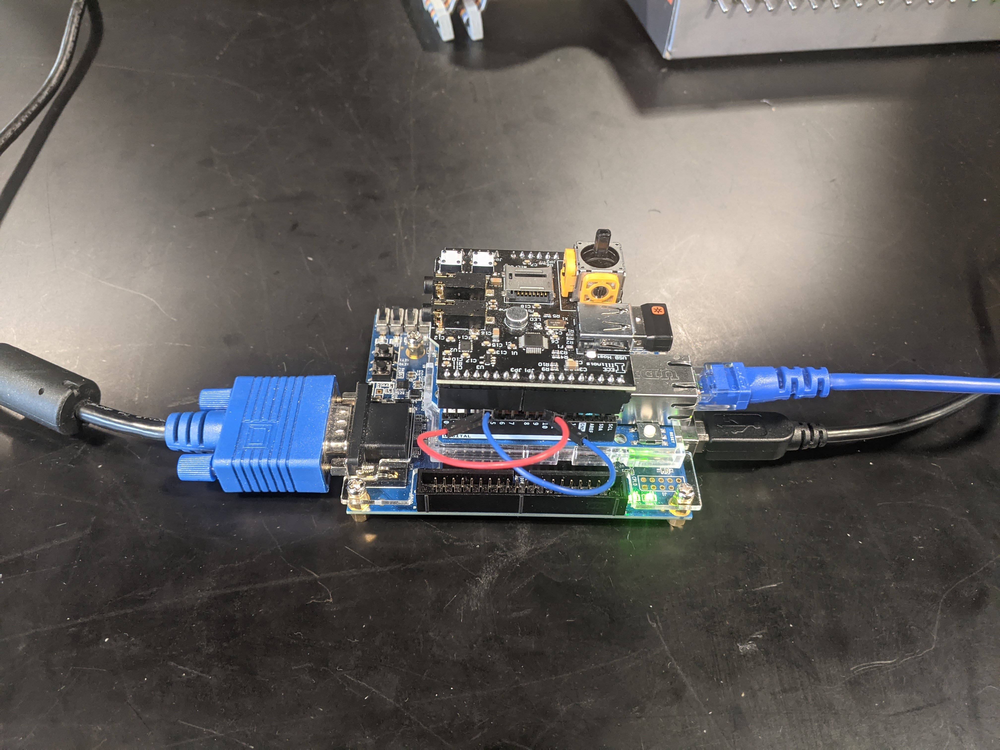

A Discord Client, running on a MAX 10 FPGA.
This is our final project for ECE 385, Digital Systems Laboratory. This course covers the basics of digital systems design, starting with building logical circuits on breadboards, and then progressing to digital design for FPGAs with the use of SystemVerilog in Intel’s Quartus Prime. We decided to implement a Discord Client, allowing a user to chat with people on Discord via our FPGA. This project was featured in the end-of-semester showcase.
We started by designing the UI for our client. This guided our design of the graphics card peripheral we later created.
This UI concept was generated via Python script. The script also converts the fonts used into .h files, used for rendering in the code running on the NIOS-II processor we flashed to the FPGA.
Below is an image of the UI rendered on the FPGA. This is not a screenshot, as the FPGA is wired to a monitor, not allowing for screen capturing. We were able to near-perfectly re-create our concept on the FPGA, with the only difference being non-perfect color replication due to the 12-bit color space on VGA.
In order to get the Discord client working, we had to connect our FPGA to ethernet, a keyboard, as well as a monitor. Connection to ethernet was handled via a W5500 ethernet controller shield, while the keyboard and monitor connections were handled with the MAX3421E chip, and the FPGA itself, respectively.

The diagram below shows communication protocols and the high-level function of all components in the project.
In order to get the project functioning on the FPGA, we implemented a pixel-level graphics card, with 2 bits per pixel stored in VRAM, as well as some control registers controlling the display output. This graphics card interfaces with a NIOS-II/f processor running the client software we wrote.
We wrote classes for the NIOS-II/f in C++ to perform the following functions:
These classes were instantiated and driven in the main loop of our software. The proper management of all these classes in the main loop resulted in a fully-functional Discord Client. See the section below for GIFs of our system at work.
FPGA Discord Client (Left) messaging with another user (Laptop, Right)
Scrolling through message history
Switching between channels on a Discord server
Switching between servers